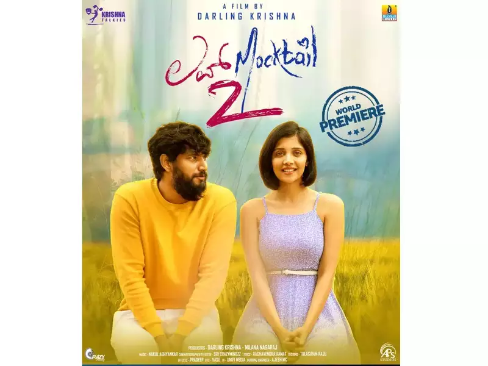

I am Udayasri Prasadam from Guntur, Andhra Pradesh, India. I completed my bachelor's at Qis college of engineering and technology in 2022, Ongole. I want to enhance my skills in wedapps through this course. In the future, I want to pursue Ph.D.
Love Mocktail is my most favourite movie. True love never ends. This movie shows teenage love to college love to adult love, all while adding a little bit of sweet romance. This movie is A good combination of fun and emotions may be found in this romantic comedy. Finally a good movie to refrush our mood so i love this movie.
I love to visit the below places. I would like to recommend this place to others to visit. The below table shows the information about the most famous place in those cities.
| City | Location | Time Duration |
|---|---|---|
| Chennai | Queensland Amusement Park | 7 days |
| Mangaluru | Tannirbhavi Beach | 4 days |
| Rishikesh | Triveni Ghat | 3 days |
| Mumbai | Gateway Of India Mumbai | 1 day |